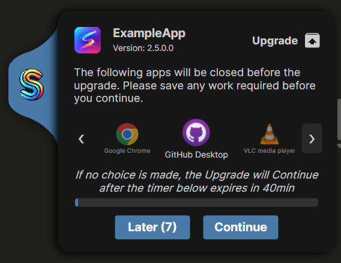

Suite Creator
Suite Creator
Bundle your installs
into one deployable suite.
Suite Creator lets software packagers combine installs, uninstalls, and configuration steps into a single executable — ready for Intune, SCCM, PDQ, or any deployment tool.


Everything a suite needs, in one place
Add as many of these as your deployment requires — each one gets its own install and uninstall behaviour.
Packages
MSI, MSIX, or any installer executable, run in order, each with its own install/uninstall behaviour.
Files & Folders
Deploy files to the device — placed during install, removed on uninstall, or left permanently.
Registry
Create registry keys and values, with full control over whether they're removed on uninstall.
Environment & Extensions
Set environment variables like PATH, or install browser extensions as part of the suite.
Popups
End-user messaging while the suite runs — warnings, install progress, and deferrals with a timer.
Executables & PS Scripts
Run setup utilities, commands, or full PowerShell scripts with supporting files bundled alongside.
Certificates & Drivers
Install certificates into a chosen store, or install/remove Windows drivers from an .inf.
Service & Process Closures
Stop services or close running processes before installs run, so files aren't locked.
Rules & Shortcuts
Gate any event on a file, registry value, or condition match, and create desktop or Start Menu shortcuts.
See it in action
A visual editor for every step — no hand-rolled wrapper scripts.


Files & Folders
Built for how packaging actually works
One exe, any deployment tool
Suite Creator produces a single executable plus a detection rule — push it out with Intune, SCCM, PDQ, or anything else that runs an .exe.
End-user aware
Warn users before an upgrade, show install progress, and let them defer with a timer — all previewable before you ship.
Centrally locked down
Admins can enforce the popup branding, log location, and a global PowerShell gate via an AppSettings.json, instead of leaving it to each packager.
Import an existing suite
Point Suite Creator at a suite .exe you've already built and it extracts everything back out — packages, files, registry, popups and all — into a ready-to-edit project, so the next version starts from the last one instead of a blank canvas.
Deploying Java x32 and x64, the way it actually goes
Say you need to roll out Java 32-bit and 64-bit across the org. That's rarely just "run two MSIs" — it's a whole list of surrounding requirements, and normally each one means another block of PowerShell to write, test, and maintain.
What the deployment actually needs to do
- Uninstall every prior version of Java before installing the new ones
- Install Java x32 and x64
- Import registry settings to disable Java Update, set
JavaHome, and enableHideSystemTrayIcon - Add the
JAVA_HOMEanddeployment.expiration.check.enabledsystem environment variables - Force-close apps you know lock the Java runtime, so the install doesn't fail
- Run a script to import a batch of certificates into the Java cert store
- Warn end users first — they'll lose the apps you're about to close — but let them skip/defer if they need a minute
- Log every step so you can prove what happened if a machine reports back broken
Where each piece lives in Suite Creator
- Packages — one entry to uninstall old Java versions, two more for the x32 and x64 installers, ordered and chained into a single suite
- Registry — the Java Update,
JavaHome, andHideSystemTrayIconvalues, set on install and rolled back automatically on uninstall - Environment & Extensions —
JAVA_HOMEanddeployment.expiration.check.enabledadded as system variables - Files & Folders / Packages — the certificate-import script shipped and run as part of the sequence
- Popups — a skippable warning telling users which apps are about to close, previewable before you ship
- Built-in logging — every package, registry change, and script run is logged automatically, no extra transcript code needed
The point isn't that any one of these is impossible to script individually — it's that normally you're the one gluing all seven together, testing the ordering, and hand-rolling the user warning. In Suite Creator each piece is just a step you add in the UI.
A modern editor, not just a means to an end
The app you'll actually spend your day in is built to feel like a proper native Windows app.
Auto-save & crash recovery
Your work is saved automatically a few seconds after every change. Close unexpectedly or crash mid-edit, and Suite Creator offers to restore exactly where you left off next time it opens.
Themes & accent colour
Switch between light and dark, and pick your own accent colour from the Settings page — applied live, no restart required.
Fluent UI
Built on Avalonia's Fluent design system, so it looks and behaves like a modern native Windows app rather than a bolted-together utility.
Integrated interactive help
A dedicated Help button walks you through whichever page you're on with contextual tips — no separate manual to go hunting through.
Documentation
Guides for building suites, locking down settings, and understanding the runtime.
Ready to build your first suite?
Free to use, MIT licensed, and open to contributions.
Suite Creator is a new project. It's actively used and maintained, but as with any early-stage app you may run into bugs or rough edges — issues are welcome.